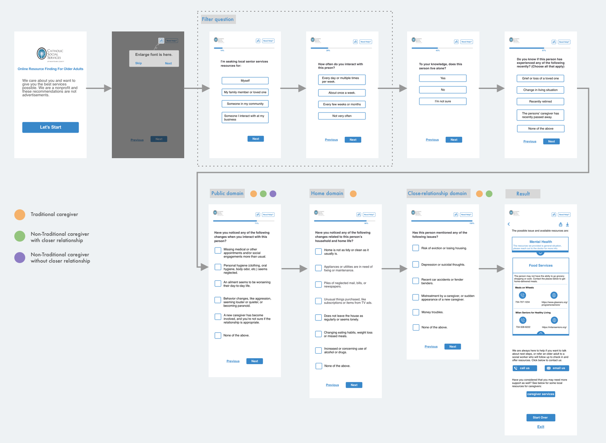
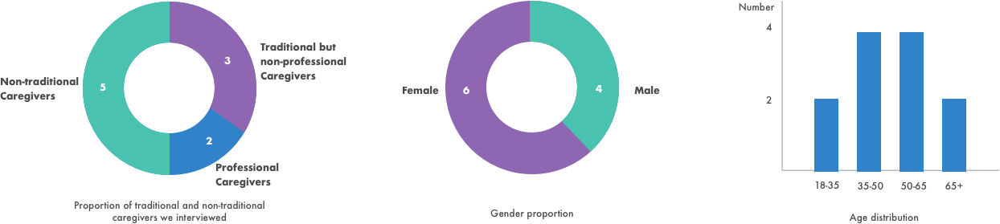

This is a semester-long project working with Catholic Social Services in Washtenaw County, building up an interactive web-based assessment tool that will help caregivers determine whether older adults in their lives may need additional resources by identifying risk factors and easily make referrals to health and social services.
This product is going to be launched next year onto the Catholic social Services of Washtenaw County website.
The tool works in a similar way as an online questionnaire. It asks for the signs of crisis (e.g abnormal behavior) the test taker noticed and gave the possible causes of the issue and a list of resources available. Here is a walk-through of how the assessment tool works.
After user clicking the link on the client’s website, they will be navigated to the landing page of the online assessment tool. Clicking the “Let’s start” button will begin the assessment. After answering the first two filtering questions designed to understand the relationship between the test taker and the person to be assessed, they are categorized into three groups: traditional caregivers, non-traditional caregivers with close relationship, and non-traditional caregivers without close relationship. The following questions fall into three domains, some of which are only applicable to close relationships. Traditional caregivers will answer “Home domain”, “Public domain”, and “Close-relationship domain” questions. Non-traditional caregivers with close relationship will answer “Public domain” and “Close-relationship domain” questions.
At the end of the survey, it will show return all the possible cause of the issues the test taker just chose and a list of resources available in Washtenaw County. For further help, users can always tap the button below to contact to our client.
The following is a display of the interactive prototype made by Adobe Xd, and you can try on your own via the link. You may find some buttons not clickable because it's overcomplicated to add every interaction via Xd.
We used Sketch to create prototypes and Adobe Xd to make page transition effects. Usability test findings are incorporated in the next iteration of design. On our way to the final product, we conducted four rounds of usability test and finally came to our fourth edition. Below are some of the prototypes of our design and the reasons why we had this feature are also presented.
Authentication information: It’s based on our usability test result that participants wondered whether the tool is related to some kind of advertisement.
This is a design for novice user and those who are not tech-savvy. We found that participants didn’t notice some features designed for them and they felt a little nervous using a new product for the first time. An instruction will familiarize the novice users with the tool.
Enlarge font: This is an accessibility issue we took into consideration. Our potential users will mainly be those who themselves are older adults, so it’s important to give them the option to enlarge the font.
Progress bar:They want to know how far they have gone and how much was left. Participants will show impatience when they didn’t have an estimation of the progress.
Tap to see the resources: Users wanted to know what was wrong with the person they did the test for and then the resources they could reach out for help.
The project involves user interview, usability test, comparative evaluation and prototyping. After understanding the client’s requirement, we narrow down our user group based on our interview of professional and non-professional caregivers. Then we focus on non-professional caregivers, conducting interviews with them to understand how they currently get resources for care recipients. Based on our knowledge to the users, we did first round prototyping and tested with the potential users, which enable us to incorporate the correctness of issues identified to the next iteration. Below is a detailed description of how we got to the result.
We began this project by fully understand what's the problem the client trying to solve. What are the limitations and oportunities we have. Our client specify the target users, who are traditional caregivers (those who take care of their parents, spouse and clients) and non-traditional caregivers (those who potentially can provide some sort of help to older adults, like bus drivers and church members).
we conducted user interview with 10 potential users in order to understand how the potential users currently find resources for care recipients and what are some functions they desire in the online assessment tool. The interviewees are professional caregivers, traditional but non-professional caregivers, and non-traditional caregivers.
We want to know how the tools can be fit into the whole process of caregivers finding resources, and the frustrations they currently have. Below are the overarching questions we hope we can get answers to after interviews.
Our contact person from CSSCW gave us two people to interview from The Oaks Adult Day Services Center. We also distributed an online survey across various Facebook Washtenaw County groups such as Dexter, Chelsea, and Whitmore Lake. Our survey asked four screening questions to determine if someone was a traditional or non-traditional caregiver: How long have you lived in Washtenaw County, Do you regularly interact with an older adult aged 65+, Do you care for an older adult on a regular basis, and Do you use the internet to search for resources, such as food, transportation, health, etc?
We also went to the church to ask if they ever take care of someone and got a few positive answers. Then we conducted interview with those who are willing to be interviewed. My teammate also asked in their network and got 1 reponse.
The gender proportion is nearly equal among the interviewees, and their age varies from 18-35 to 65+. According to our definition, we have 5 traditional and 5 non-traditional caregivers. We have tried our best to avoid possible bias from demographics.
Caregivers will either turn to someone they trust, and ask them for possible resources, or search online.
The most frequently mentioned ways or getting resources are searching online and asking someone they trust, explained that it is a reliable way.
When searching online, all of the caregivers use google and search for the name of the resources with a specific area. They expected to find the resources that most suitable to the situation.
They will input the name or category of the organization specified by the area. For example, if they want to find a psychological clinic, they will input psychological clinic Ann Arbor in the search bar. When they get the results from the search engine, they want to know the address, contact information, and most important of all, if it can solve the problems.
The online assessment tool’s resources page should be the last stop in the search for resources.
Our interviewees expressed that the last page of the online assessment tool where users are presented with a list of resources should be the last stop. This means that people don’t need to go elsewhere to find further resources. Essentially, the tool should be precise and specific to what the user needs and wants.
Professional caregivers are not our target users.
Two of our interviewees are professional caregivers. They are experienced in terms of identifying the possible issues. We found that they had directories and handbooks of the available resources nearby. They don't need assessments, but will directly go to the directory to find resources.
Based on our understanding of users via interviews, we generated three personas for professional caregiver, traditional caregiver and non-traditional caregiver. Since we found professional caregivers are not our target users, we mainly focus on the other two personas. Although our users age varies, we want to focus on aged people, since if they can easily use the product, everyone in our user group should be able to use it. Moreover, we found that people younger than 35 have less interactions with older adults than people who are 35+.
We followed the best practice of agile development, which suggests testing even when the prototype is not perfect. Our research goal is to get users' feedback of how easy or difficult they felt doing the evaluation with the tool. We were able to conduct four rounds of usability tests and applied the findings in the next iteration.
How easy or difficult can the participants use the tool to do assessment for a care recipient?
How is the accessibility of the design in terms of the aged population?
Navigate from the landing page to the result page, finishing the questionnaire.We provide the scenario which is that you are doing the test for someone in your community you met once a week for she lost a lot of weight these days.
In order to understand the participants, we have pre-test questions asking for demographics. The post-test questions were designed to instruct participants to reflect their experience of conducting the tasks, so that we can know their experience from the reflective level. The pre-test and post-test questions can be checked here.
Most participants didn’t notice the enlarge font feature.
Although the enlarge font feature is available, most of participants failed to notice and some even didn’t know what is it for. As a result, a brief instruction of how to use the tool was incorporated in the next iteration.
The tool need to earn the trust from the users.
When we asked them what did you think of the tool, they doubted that whether it is some kind of advertisements. Authentification information should be provided at the beginning of the test to build up trust.
Participants want to know how far they have gone through the test.
They asked how many questions left during the test. Although there were only a couple of pages, we still felt the necessity of having progress bar in every pages.
It was more convincing when the explanation of how the issue were generated by answering the questions.
Participants asked how the results were generated, so a brief explanation of why these issues were brought up was necessary.
Some questions need to have explanations to specify the vague concept.
For example, one of the questions asking whether that person take more drugs than usual. Some people express their confusion on how much more should be considered a problem.
Display the options the user just chosen on the result page.
Aged people may have difficulty in retrieving what they chose just now. Having the chosen options shown and explanations, which tells them why the system gives the following resources, will improve the reliability of the tool.
Give the assessment results and the resources corresponding to those issues rather than instructing users to contact CSS.
We learnt from the interviews that users expect to get the possible issues and resources when they use this tool. It makes no sense letting users finish the assessment process first and then ask help from the client.
One day you'll leave this world behind, so live a life you will remember.
Designed & coded by Yin Yin.